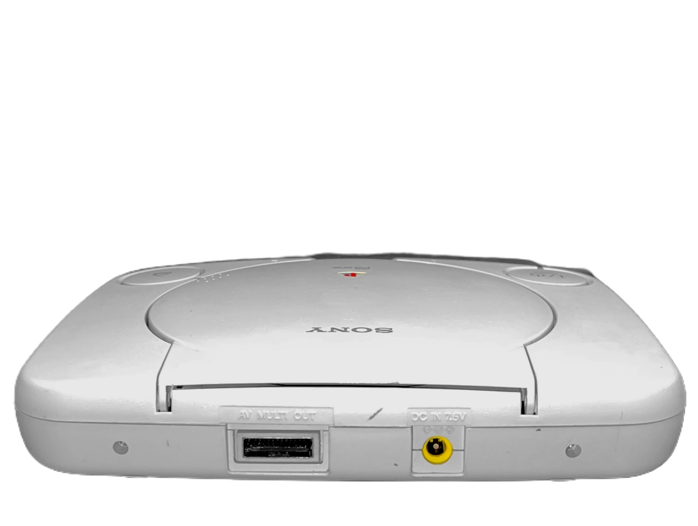

PS1
Főoldal
(current)
A rajt
A PS1-ről
Felépítés
Beüzemelés
PS1 CD-k
Modchipek
PAL vs NTSC
Modellek
Hibajelenségek
CD fajták
Játékok
Felépítés
„A PlayStation 1: Csodálatosan összeállított hardver és elbűvölő dizájn, ami feléleszti a játékosság lelkét.‟
Mutass többet
Beüzemelés
Felépítés
A PlayStation 1 felépítése igazán egyszerű!
Elől bal oldalon két gomb van. A kisebb a RESET, a nagyobb a POWER.
POWER -> A konzol indítása.
RESET -> Szoftveres újraindítás.
Ha a konzol el van indítva, azt egy zöld fény jelzi a POWER gomb előtt.
Jobb oldalon van a CD tálcanyitó gomb, ezt lenyomva behelyezhetünk egy CD-t ami vagy zene CD vagy PS1 játék.
Lent két memóriakártya foglalatot találhatunk fentebb, illetve két kontroller foglalatot lentebb.
A konzolt hátára fordítva látunk egy matricát. Ennek segítségével megnézhető a modellszám.
Jelen esetben ez SCPH-5501 amerikai piacra szánt NTSC modell.
Ezen kívül figyelmeztetéseket tartalmaz a konzol biztonságos szétszerelhetőségének érdekében.
Most nézzük sorra a csatlakozókat.
A képen bal oldalon egy párhuzamos port van, általában Gameshark csalásokat tartalmazó kazettához. Az SCPH-900x modellekben ez már nem található meg.
Mellette egy soros port kapott helyet, amivel két PS1-et lehet egymáshoz csatlakoztatni több, mint 2 játékossal való multiplayerezés céljából.
Emellett található rajta RCA kimenet. Igaz, csak az első, és a Video CD-t (VCD) is lejátszani képes modelleknél (SCPH-100x-SCPH-300x, SCPH-5593).
Az RCA mellett van az AV foglalat, melynek segítségével TV-hez csatlakoztatható a PS1.
Utána van a tápcsatlakozó, ez árammal látja el a konzolt.
Belső tápegységes kialakítása miatt néz ki úgy, mint egy végtelen jel.
És ezzel még nincs vége, ugyanis a PS1-nek 2000-ben megjelent egy újabb kiadása PSone néven.
Véknyabb kialakítása van, és külső tápegységről üzemel.
Ezen a modellen (SCPH-10x) nincs rajta a RESET gomb
A hátsó csatlakozókat lecsupaszították, viszont ehhez lehet kijelzőt csatlakoztatni
A kijelző lehetőséget adott arra, hogy autóban is tudjunk játszani a konzollal

Hátul az AV foglalaton, és a külső tápegység kör alakú foglalatán kívül semmi nincs
Két csavar segítségével lehet rögzíteni rá egy 5 colos kijelzőt
Ennyiből áll a konzol felépítése